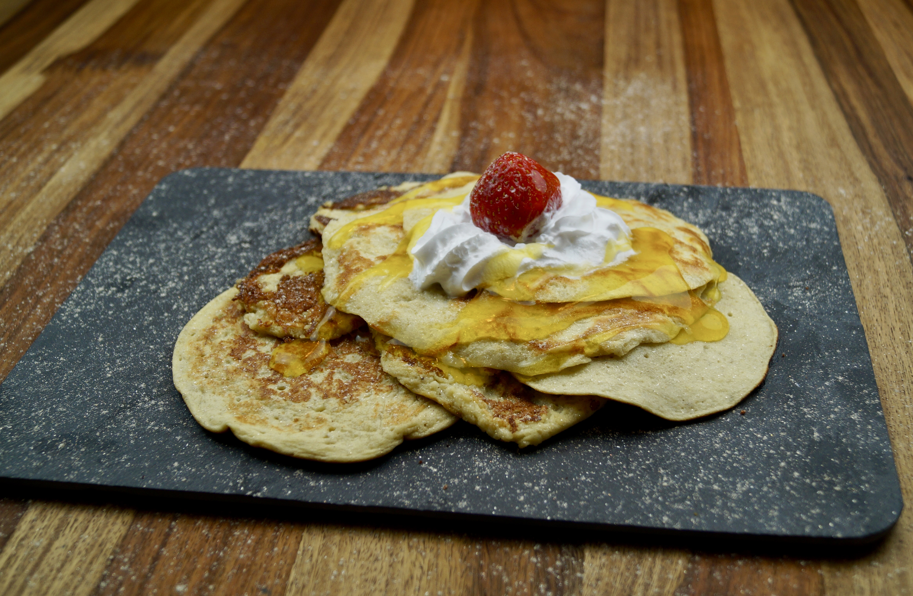

Banana pancakes

I love banana pancakes and made them quite a few times. Pancakes by themselves are quite
plain so adding another flavour to them makes all the difference.
Ingredients
- 1 cup flour
- 1 tbsp baking powder
- 1/2 tsp cinnamon
- 1/4 tsp salt
- 3/4 cup mashed banana
- 1 large egg
- 3/4 cup milk
Steps
-
In a medium bowl, whisk together the flour, baking powder, cinnamon, and salt.
In another, larger bowl, beat the banana and egg together until blended.
Whisk in the milk until combined, then whisk in the dry ingredients. The batter
will be slightly lumpy.
-
Heat a large nonstick pan over medium heat. Spray with nonstick cooking spray.
- Using a 1/3-cup measuring cup, pour 3-4 circles of batter into the pan.
Cook until the pancakes are puffed on top and golden brown on the bottom, 2-3 minutes,
then flip and cook on the other side until risen and cooked through, 1-2 minutes more.
Recipe taken from
feel good foodie
Home